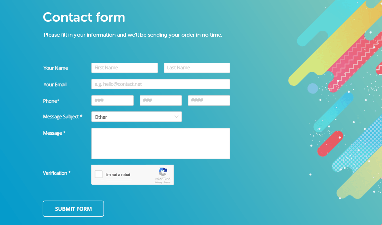
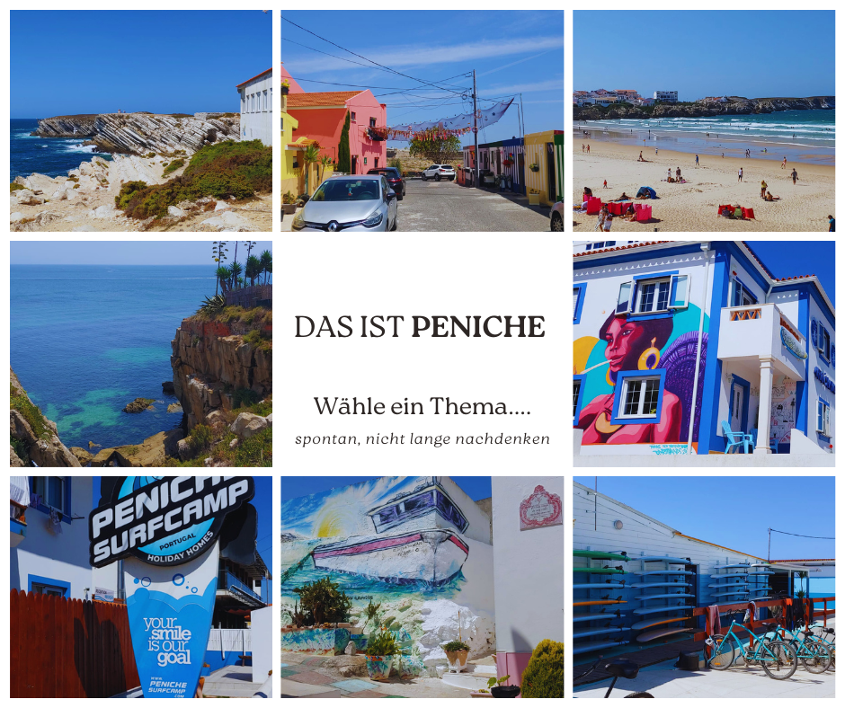
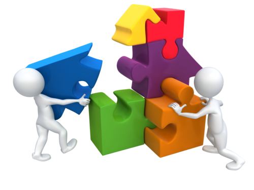

Wichtige Dokumente
Thema 0: Informatik allgemein

- Motivation, Struktur, Regeln, Ausblick
- Daten, Ordnerstruktur
* Bewegung im Klassenraum .... zwischen allen Phasen soll man sich bewegen müssen, ich habe keinen Bock, dass alle nur da rum sitzen, ich will mich schließlich auch bewegen beim Arbeiten.
* Projektbasiert
* Pokemon überall auf der Welt Sammeln, Pokestopps, auf Schiffe etc. Idee
Thema 1: Webentwicklung

-
Intro HTML, Peniche Seite anschauen
-
Formulare der Peniche Seite anschauen
 -
Selbst Schreiben (kleine Teile)

TODO
Wann werden Begriffe wie Syntax, Semantik, CodePen, GitHub, zip Dateien, Index, Einrückung etc geklärt? Betonung: Formatierung ... erzwingen???
Nochmal gemeinsam sammeln, welche Elemente was machen, Auf jeden Fall die Aufban in Ruhe und im Detail besprechen. Begriffe klären: Tag, Attribut, Dreiecksklammern Aufgaben als Formular in das man nicht kopieren kann: - Schema: immer erste einmal ein Beispiel, z.B. ein Bild zeigen, den HTML Code dazu zeigen, dann ABSCHREIBEN lassen, dann zwei Veränderung, die man vornehmen muss vorgeben, die sollen erledigt werden. Im Anschluss hat man eine neue Seite und soll ein Bild ohne eine Vorlage erscheinen lassen. Auf diese Art und Weise: - runterschreiben des Grundgerüsts - einer Liste .... Hilfe wäre, dass es kurz angezeigt wird - einer Tabelle, eines Bildes etc. - Formulare Hausaufgabe: Quizz mit den Begriffen, nochmal das Grundgerüst aufschreiben, nochmal Listen, Tabellen etc. aufschreiben. Betonung: Formatierung ... erzwingen??? -
Peniche Themenwahl, Beginn Entwicklung
TODO
Videos und Bilder mit Clues von Peniche zeigen, Thema aussuchen (ohne nachzudenken, was spricht mich an), Themen in ein Seminarpannel schreiben, bzw einen Chat oder irgendwas wie Flinga was sofort für alle angezeigt wird. Das muss ich aber auch automatisch gespeichert haben. in Formular erst mal alles runterschreiben lassen (ohne Kopierfunktion), Vorgabe ist nur, dass alle gelernten Elemente vorkommen sollen, aber sonst in der Recherche und Gestaltung völlig frei Betonung: Formatierung ... erzwingen??? -
Projekt ... weiterarbeiten
TODO
Weiterarbeiten an eigener Peniche Seite Clues mit Hilfekärtchen für weitere Funktionen geben, aber reines HTML, mal nachschlagen was wirklich mit nur HTML geht - Stunde
- Präsentation
- Aufgaben
- Plan: CSS hier erst oder schon die ganze Zeit????? besser hier, um eine klare Abgrenzung zu erhalten, jetzt meine Peniche Seite auch mit CSS zeigen, durchgehen Aufgabenschema jetzt wie bei HTML, erst mal Veränderungen an meiner Seite vornehmen, Farben etc.
- Material
- Cheat Sheet CSS
- Stunde
- Stunde
- Stunde
- Präsi
- Aufgaben
- Plan: weiter eingene Peniche Seite mit CSS ausrüsten Hilfekärtchen für z.B. andere Möglichkeiten wie HTMLShadowboxes, schöne Buttons und Forumlare HA: Seite hochladen, und zwar genau in der Zielbenennung, sodass mein Skript sie auf unserer Projektseite von 2023 einfügen kann. Das selbe werden wir dann auch mit den großen Projekten machen, aber dann über Links, die sich in neuen Tabs öffnen. Seiten der anderen ansehen, Feedback per Formular abschicken, jeder bekommt sein Feedback der anderen als PDF
- Stunde
- Präsi
- Aufgaben
- Plan: Externe Libraries verwenden, wie Fontawesome .... zeigen, dann probieren
- Material
- Cheat Sheet CSS Fortgeschritten und Libraries
- Stunde
- Präsi
- Peniche (mit Bootstrap)
- Aufgaben
- Plan: Library Bootstrap vorstellen, zeigen, dann verwenden
- Stunde
- Präsi
- Peniche (mit Grid)
- Aufgaben
- Plan: Grid zeigen, Aufgaben machen, wo jeder Dinge einzeln anordnen muss, Grid selbst erstellen lassen ohne kopierfuntkon, nach bestimmten vorgaben, HA: nochmal machen lassen mit anderen Vorgaben
- Stunde
- Stunde
- Stunde
- Stunde
- Präsi
- Aufgaben
- Plan: weitere Projektstunden (10 Stück) ... Rest ist immer HA, immmer im Formular eintragen was man als HA gemacht hat Feedbackrunde nach jeder Stunden jeweils geben, indem zufällig zwei Leute vom System ausgesucht werden, diese kurz was zu ihrer Idee sagen und wie weit sie sind und die anderen zeigen Problemstellen auf und sagen was man noch machen könnte.
- Stunde
- Präsi
- Aufgaben
- Plan: Abschluss: Speedrunde durch die Projekte mit laufendem Timer sind also insgesamt für HTML 26 Stunden, + eine KA, zwei KA vorbereitung .... grob 30 Stunden HTML und CSS (es sind groß 42 Stunden bis Weihnachten, also noch Luft für was anderes, wenn man nochmal zwei bis drei Introstunden am Anfang abzieht)
- Stunde XXXXX FERTIG XXXXXXX
- Stunde
- Präsentation Webseite zeigen, Untersuchen, einfache eigene Seite, untersuchen, Blank, so, jetzt schreibt das, li, table, img, link ... alles in erster Stunde zeigen ... anwenden lassen HA: 10 Mal Grundgerüst aufschreiben die nächsten Stunden, ganz oft Aufgaben wie, alles Blank, schreibt es auf, schreibt eine Liste auf in ein leeres Feld, schreibt ein Bild in ein leeres Feld
- Aufgaben
- Merkblatt
- Interaktives Quizz, mit Aufgaben und HTML Code runterschreiben
Thema A: Citzizen Sensing
 collect Data
collect Data
Thema G: Blender
 model, texture, animate ==> make a movie
model, texture, animate ==> make a movie
Thema Y: Everything about 3D Printing
 3D
3D
Thema B: CG
 Uni here
Uni here
Projekt T-Shirts designen
Thema Y: Toyhacking

Projekt: Bluetooth Lautsprecher in Plüschtier

TODO
Kippe eine Kiste mit Plüschtieren in der Mitte aus.... Wir machen daraus einen Bluetooth Lautsprecher ... Folie: Was brauchen wir ... sammeln anklicken ... Interaktives element ... anklicken, dann erscheint es ... Wir müssen wir die verbinden .... GoodNotes??? Legt die Teile vor euch aus, zeichnet auf ein Papier die Kabel in den Farben ... zeichnet den Stromfluss nach (ohne, dass die Folie vorne zu sehen ist). Erweiterungsmöglichkeit: * Mikrocontroller und Buttons hinzufügen, z.B. könnte man auch verschiedene Buttons haben, die unterschiedliche Tracks abspielen * Man kann auch Gesten oder Entfernungen erkennen lassenThema X: Datenbanken
 8 Stunden: SQL Geschichte mit der Maulwurfstadt
8 Stunden: CRUD
8 Stunden: eigenes Projekt mit diesem Wissen
8 Stunden: SQL Geschichte mit der Maulwurfstadt
8 Stunden: CRUD
8 Stunden: eigenes Projekt mit diesem Wissen
Diverses
- Informatik Vorstellung
- MINT Vorstellung
- Johnny Vorstellung
- Erasmus+, Buinho Education, Sommer 2023 Lissabon,
Cititzen Sensing und Everything about 3D Printing- Präsentation starten
- Material Citizen Sensing
- Material Everything about 3D Printing
- Material Anja Eckstein
- Erasmusbericht
- Meine Notizen (sehr ausführlich)